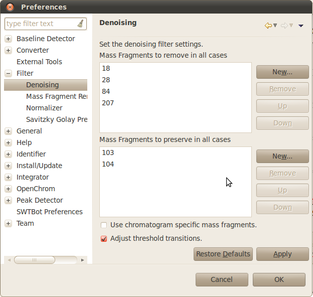
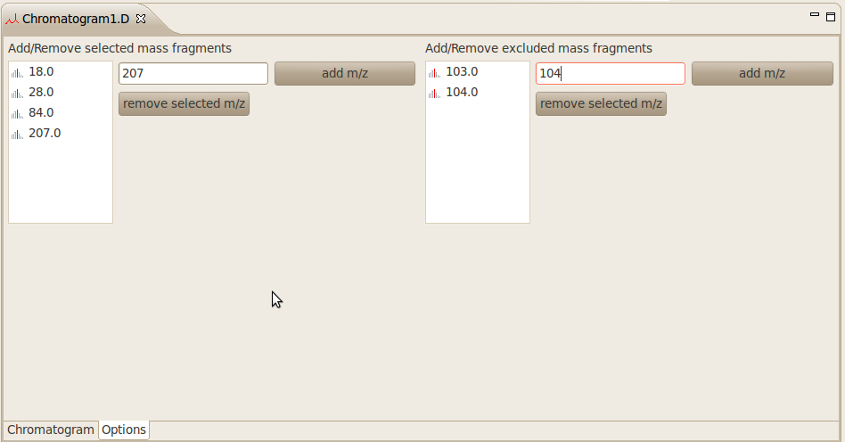
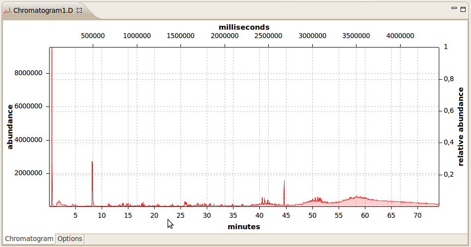
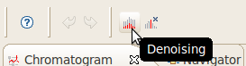
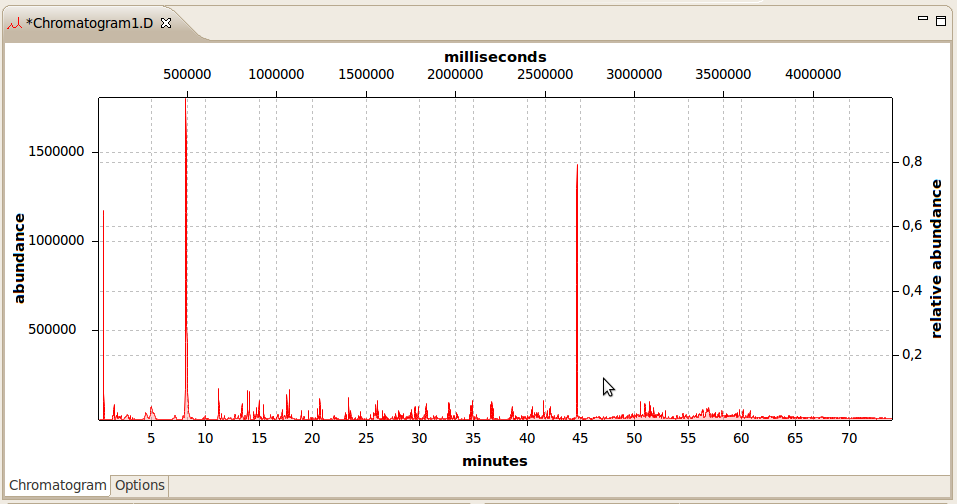
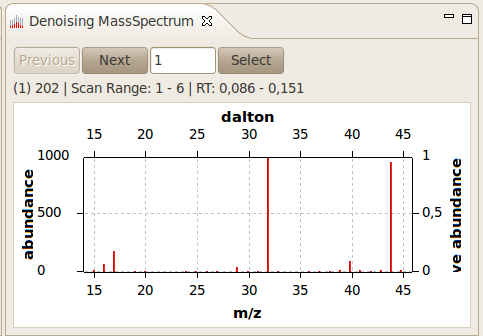

Denoising Filter
The denoising filter implements algorithms to remove noise from chromatograms.
Watch also the video tutorials.
The user can define ions that will be removed in any case.
It is also possible to define ions that will be preserved in any case.

The user can add/remove further ions using the new or remove button.
If "adjust threshold transitions" is activated, zero abundance values (due to systems threshold) will be replaced by a calculated value.
If the checkbox "Use chromatogram specific ions" is checked, the chosen ions from the chromatogram editor will be taken.
Remove or preserve the selected ions given by the chromatogram editor:

It's also possible to set the scan width to determine noise segments using the drop-down box. Given values are a width of 7,9,11,13,15,17 and 19 scans.
To apply the filter, select a chromatogram or a distinct retention time range.

Click now on the filter button.

The noise will be removed from the chromatogram.

An extra view shows the mass spectra that have been identified as noise.
